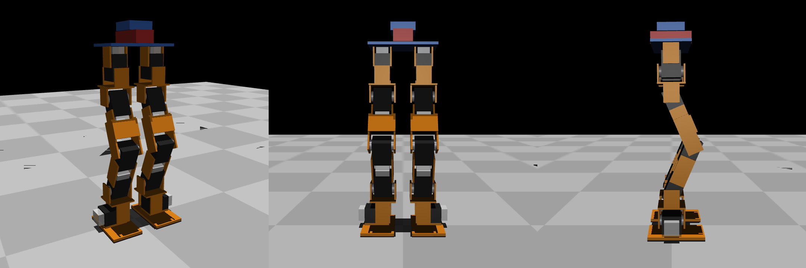

PORTFOLIO SUMMARY · 2026
박근호
컴퓨터비전과 로봇 시스템을 공부하고 만듭니다
인천대학교 정보기술대학 임베디드시스템공학과 학사 (2023.03 – 2026.08)
인천대학교 대학원 인공지능응용시스템 연구실 석사과정 · 학·석사 연계과정 연구장학생 (2026.09 ~)
포트폴리오 pgh0621.github.io
인식한 것을 실제로 움직이는 하드웨어에 연결하는 지점에 관심이 있습니다. 학부에서는 임베디드시스템공학을 전공하며 자율주행 레이싱 스택과 주차 단속 로봇을 직접 만들어 돌려봤고, 지금은 인공지능응용시스템 연구실에서 컴퓨터비전과 Physical AI를 주제로 산업체 협업 과제를 함께 진행하고 있습니다.
논문을 읽는 것보다 그 방법을 실제 로봇 위에서 돌아가게 만드는 과정에서 배우는 게 많다고 생각합니다. 그래서 만든 것은 대부분 공개하고, 배운 것은 교육 프로그램으로 다시 정리합니다.
- 프로젝트
- 5자율주행 · 로봇 · HCI
- 수상
- 7대상 1 · 팀장 4
- 교육 봉사
- 17회청소년 400명
- 운영 기간
- 2022 ~코딩학당 운영 총괄
연구 관심
자율주행 (BEV fusion, occupancy grid) · Visual SLAM 및 3D 복원 · Sim-to-real 로봇 제어
주로 쓰는 도구
ROS 2 · PyTorch · Python / C++ · Jetson Orin · MuJoCo
자율주행 스택
LiDAR 지도 작성과 위치 추정부터 경로 계획·제어까지, ROS 2로 주행 시스템을 직접 구현
로봇 하드웨어
3D 프린팅 구조물과 센서 마운트 제작, 구동계 캘리브레이션과 실차 파라미터 튜닝
팀과 교육
교육 봉사 프로젝트 운영 총괄, 수상 7건 중 4건을 팀장으로 수행


